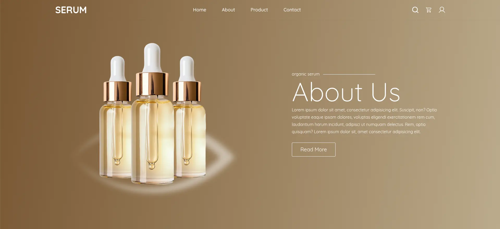
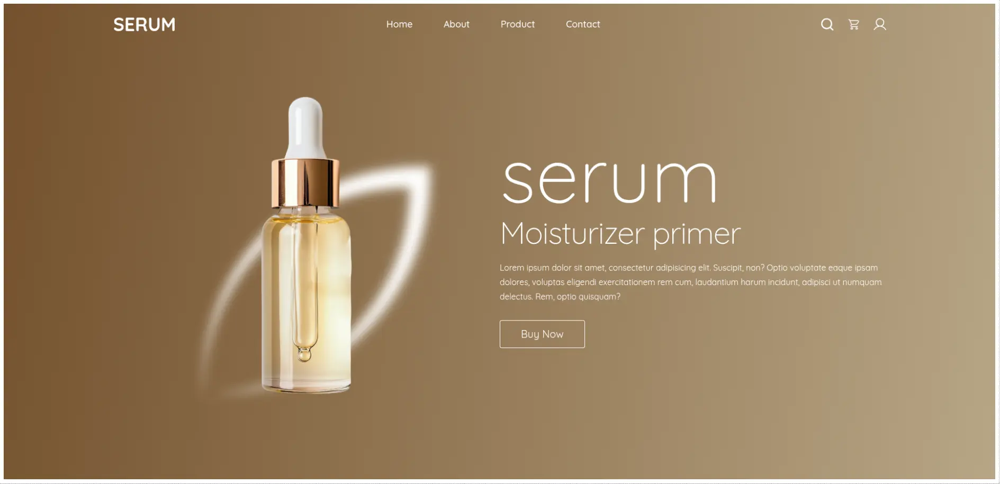

UI Screens


Interactive landing page built with scroll-based animations and smooth motion design.

Build a landing page with responsive, scroll-linked animation that behaves correctly across breakpoints and doesn't leak memory or break on window resize — the kind of detail that separates a demo from something production-ready.

HTML5 · CSS3 · Tailwind CSS · JavaScript · GSAP (core, ScrollTrigger, Draggable)